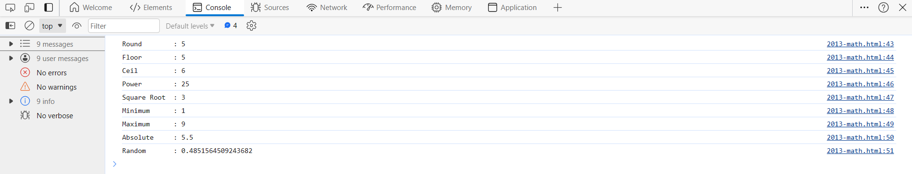
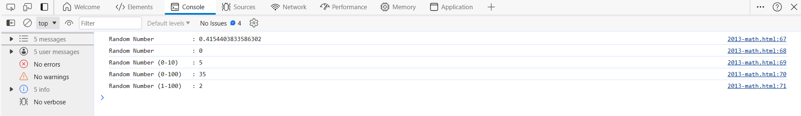

The JavaScript Math object allows you to perform mathematical tasks on numbers.
Some of the popular methods area:
Example:
console.log("Round : " + Math.round(5.485665));
console.log("Floor : " + Math.floor(5.56));
console.log("Ceil : " + Math.ceil(5.56));
console.log("Power : " + Math.pow(5, 2));
console.log("Square Root : " + Math.sqrt(9));
console.log("Minimum : " + Math.min(1, 3 , 5, 7, 9));
console.log("Maximum : " + Math.max(1, 3 , 5, 7, 9));
console.log("Absolute : " + Math.abs(-5.5));
console.log("Random : " + Math.random());

Math.random() : returns a random number from 0 (inclusive) up to but not including 1 (exclusive).
- Random Number: Math.random();
- Random number between 0 and 10: Math.random() * 10;
- Random number between 0 and 100: Math.random() * 100
- Random whole number between 1 and 100: (Math.random() * 100) + 1
Example:
console.log("Random Number : " + Math.random());
console.log("Random Number : " + Math.floor(Math.random()));
console.log("Random Number (0-10) : " + Math.floor(Math.random() * 10));
console.log("Random Number (0-100) : " + Math.floor(Math.random() * 100));
console.log("Random Number (1-100) : " + Math.floor((Math.random() * 10) + 1));
